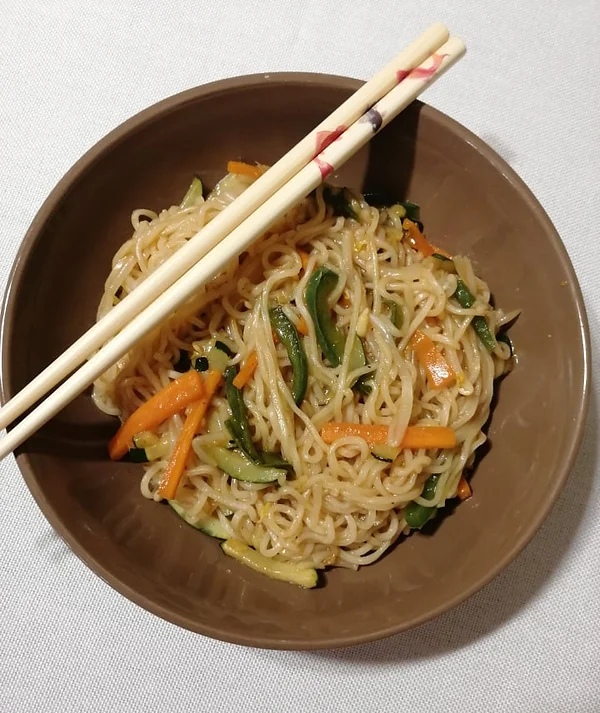

Udon Noodles
Tempo de preparação
5min
Horas de Cozimento
15min
Tempo Total
20min
Porções
2

Ingredientes
- 2 alhos picados
- gengibre em pó q.b
- ½ cenoura cortada em palitos finos
- ½ courgette cortada em palitos
- ½ pimento verde cortado em palitos
- sal q.b
- pimenta preta q.b
- alho em pó q.b
- pimentão doce q.b
- 1 punhado de rebentos de feijão de lata
- 1 embalagem de noodles
- ⅓ de um copo com água
- 3 a 4 csp de molho de soja
- 2 csp de vinagre de sidra
- 1 csp de azeite
- 2 csp de maple syrup
- 1 csp de farinha maisena
- flocos de piri piri q.b
Instruções
Molho:
- Numa tigela coloque ⅓ de um copo com água, 3 a 4 colheres de sopa de molho de soja, 2 colheres de sopa de vinagre de sidra, 2 colheres de sopa de maple syrup, 1 colher de sopa de farinha maisena e uma pitada de flocos de piri piri. Misture e reserve.
Massa:
- Coloque a embalagem de noodles sem os temperos a cozer em água a ferver durante o tempo que a embalagem indica.
- Quando estiver cozida, escorra a água e guarde meio copo da água da cozedura da massa.
Vegetais:
- Numa sertã antiaderente, salteie o alho com o gengibre num fio de azeite.
- Quando o alho estiver dourado, adicione a cenoura, a courgette, o pimento verde e tempere com sal, pimenta preta, alho em pó e pimentão doce.
- No momento em que os últimos legumes estiverem cozidos adicione o molho reservado, meio copo de água da cozedura da massa, os noodles cozidos, um punhado de rebentos de feijão.
- Deixe a saltear até a massa absorver o sabor e o molho. Está pronto a empratar! Desafio a comer de pauzinhos :)